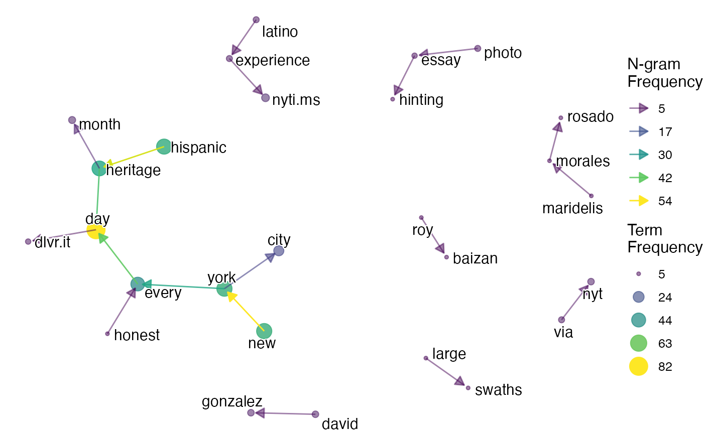

Topic Modelling with Bertopic
bertopic.RmdBertopicR is a package that allows us to use the Python BERTopic package in r. To do this we need to leverage the reticulate library which allows us to embed a python session within our r session. Firstly, we load our libraries. Note: Always load BertopicR before loading reticulate, if you get an error about python version discrepencies, restart your r session.
Then check that our environment has been configured correctly
check_python_dependencies()
#> bertopic is installed, setup looks good.Now we can import the python BERTopic library through BertopicR via reticulate
BertopicR:::import_bertopic()Now we can look at what’s been loaded in. The “py” prefix tells r that we want to look within the python environment. We should see a vector containing: backend; BERTopic; cluster; plotting; representation; vectorizers
names(py$bertopic)
#> [1] "backend" "BERTopic" "cluster" "plotting"
#> [5] "representation" "vectorizers"Other than spam and duplicate post removal, there is no data preprocessing strictly required for topic analysis using BERT. That said, I have found better results by removing hashtags and it can be useful to remove mentions, urls and emojis at this stage as, assuming these are not important parts of your analysis, it should not affect the results and will be helpful when looking at the data later. We can use the ParseR clean_text function to do this (note that this function removes urls).
Load and preprocess the data:
data <- bert_example_data %>%
janitor::clean_names() %>%
dplyr::mutate(text_clean = message, .before = message) %>%
ParseR::clean_text(text_var = text_clean,
tolower = TRUE,
hashtags = FALSE,
mentions = FALSE,
emojis = FALSE,
punctuation = TRUE,
digits = TRUE,
in_parallel = TRUE) %>%
dplyr::distinct(permalink, .keep_all = TRUE) %>%
dplyr::mutate(char_length = stringr::str_length(text_clean)) %>%
dplyr::filter(char_length >= 10)Next we use the bt_fit_transform_model() function to fit the model to our data. This function returns a list containing both the fitted model and the embeddings used to generate the model.
output <- bt_fit_transform_model(cleaned_text = data$text_clean)
model <- output[[1]]
embeddings <- output[[2]]Now that we have fit the model we can look at the topics it has predicted for our data. The -1 category here represents outlier posts that do not fit as well into the identified topics.
model$get_topic_info()
#> Topic Count Name
#> 1 -1 2680 -1_heritage_hispanic_students_celebration
#> 2 0 173 0_festival_october_tomorrow_event
#> 3 1 113 1_school_students_celebrated_grade
#> 4 2 109 2_month_celebrating_hispanic_celebrate
#> 5 3 100 3_rourke_refuses_bobby_lacks
#> [ reached 'max' / getOption("max.print") -- omitted 101 rows ]Bert has identified 95 topics, excluding outliers, this is probably too many for us to process and perform meaningful analysis on, we can adjust the model parameters so that a more manageable number of topics are identified. It can be helpful to glance through all of these topics in order to get a more granular understanding of the data and to identify topics which might be irrelevant to the analysis and could be removed.
Adjusting Model Parameters
When creating the model, we can alter the min_topic_size arguments to control the number of posts required per topic. We can also specify the ngram_range and diversity parameters to control the size and diversity of the ngrams used to represent the topics and set stopwords to TRUE to prevent stopwords appearing in the representative ngrams (Note that this does not remove them from the text being analysed, only from the ngrams used to describe the topics). It is also possible to use the nr_topics argument to specify the exact number of topics we would like the model to output however this should not be done without careful examination of the data.
If you have run the bt_fit_transform_model() function yourself at all you might have noticed that you can get very different results each time you run it, this is due to the stochastic nature of umap, to avoid this we can specify a random state which prevents any stochastic behaviour and gives reproducible results. Reproducing your results can also be achieved by saving your model and reusing it, it is completely fine to run the model a number of times to see what topics are output and save the model which you feel best fits your research.
As we have already run this bt_fit_transform_model() on the same data, we can simply feed the already saved embedding to the model, this time the bt_fit_transform_model function will only output a bertopic model, not the embeddings.
Note: More information on hyperparameter tuning can be found on the BERTopic website
model <- bt_fit_transform_model(cleaned_text = data$text_clean,
calculated_embeddings = embeddings,
min_topic_size = 30,
ngram_range = c(1, 3),
diversity = 0.5,
stopwords = TRUE,
random_state = 42)Lets look at the output topics this time:
model$get_topic_info()
#> Topic Count
#> 1 -1 170
#> 2 0 5235
#> 3 1 220
#> 4 2 123
#> 5 3 41
#> Name
#> 1 -1_hispanic heritage_prepare_ellen ochoa_receive turn
#> 2 0_heritage month_hispanic heritage month_day_students
#> 3 1_beto_heritage_fake_lacks
#> 4 2_beto rourke_rourke membership lacks_membership lacks hispanic_hispanic caucus refuses
#> 5 3_54th annual hispanic_5th ave____tradition 5th
#> [ reached 'max' / getOption("max.print") -- omitted 1 rows ]This time we get 6 topics output which is much more manageable for analysis.
Exploring Topics
Now we might need to take a closer look at each topic to understand better what they are about. To do this we use the bt_make_df() function to merge the bert results with the Sprinklr export. We can then look at topics using ParseR to create bigrams, the BertopicR function bt_viz_top_terms() to create a top terms plot or look at exemplars by filtering the df to the topic we’re interested in.
merged_df <- data %>% bt_make_df(model = model,
embeddings = embeddings,
text_var = text_clean)
merged_df
#> # A tibble: 5,829 × 61
#> document universal_message_id social_network sender_user_id
#> <int> <chr> <chr> <chr>
#> 1 1 TWITTER_4_1057818026265980928 TWITTER 328184177
#> 2 2 TWITTER_2_1057782423700815873 TWITTER 2544249232
#> 3 3 TWITTER_2_1057758721747701762 TWITTER 227137623
#> 4 4 TWITTER_2_1057744985527910401 TWITTER 21702500
#> 5 5 TWITTER_2_1057730393053519873 TWITTER 1708113440
#> 6 6 INSTAGRAM_36_1902499764302394154_5416… INSTAGRAM agriosmo
#> 7 7 TWITTER_2_1057716292281622528 TWITTER 7395452317968…
#> 8 8 TWITTER_2_1057700738732908546 TWITTER 4258372295
#> 9 9 INSTAGRAM_36_1902419377766942925_7958… INSTAGRAM tasteofstylec…
#> 10 10 INSTAGRAM_36_1902389293970072552_1934… INSTAGRAM salviqtpie84
#> # ℹ 5,819 more rows
#> # ℹ 57 more variables: sender_screen_name <chr>, sender_listed_name <chr>,
#> # sender_profile_img_url <chr>, sender_profile_link <lgl>,
#> # sender_followers_count <dbl>, sender_influencer_score <lgl>,
#> # sender_age <lgl>, sender_gender <chr>, title <chr>, text_clean <chr>,
#> # message <chr>, message_type <chr>, created_time <date>, language <chr>,
#> # language_code <chr>, country_code <chr>, media_type_list <chr>, …Make bigrams:
merged_df %>% filter(topic == 4) %>%
ParseR::count_ngram(text_var = text_clean,
remove_stops = TRUE,
min_freq = 5,
top_n = 25) %>%
purrr::pluck("viz") %>%
ParseR::viz_ngram(emphasis = TRUE)
#> Warning in max(node_freq): no non-missing arguments to max; returning -Inf
#> Warning in min(node_freq): no non-missing arguments to min; returning Inf
#> Warning in max(edge_freq): no non-missing arguments to max; returning -Inf
#> Warning in min(edge_freq): no non-missing arguments to min; returning Inf
Look at top terms:
merged_df %>%
bt_viz_top_terms(min_freq = 5,
type = "lollipop")
#> $all_terms
#>
#> $max_only
As with SegmentR, both all_terms and max_only plots are returned and we can choose to display these charts with a bar or lollipop viz and pluck either all_terms or max_only if we wish.
merged_df %>%
bt_viz_top_terms(min_freq = 5,
type = "bars") %>%
purrr::pluck("max_only")
We can also look at diff_terms as we would have done when using SegmentR:
merged_df %>%
bt_viz_diff_terms(min_freq = 5,
type = "lollipop") %>%
purrr::pluck("topic0_vs_topic1")
If we want to look at exemplars we can simply filter the dataframe:
We can also look at a umap that shows us the topic distribution. This can be helpful in showing us how closely different topics relate to one another and we should continue to check this diagram as we merge topics or reduce outliers. We can use LandscapeR or the bertopic umap viz to achieve this.
LandscapeR:
merged_df %>%
mutate(created_time = as.Date(created_time)) %>%
LandscapeR::conversation_landscape(id = document,
text_var = message,
colour_var = topic,
cleaned_text_var = text_clean,
date_var = created_time,
url_var = permalink,
sentiment_var = sentiment,
x_var = V1,
y_var = V2)BertopicR:
model$visualize_documents(docs = data$text_clean,
embeddings = embeddings)$show()A key difference between Bert and LDA is the use of hierarchical clustering, this means we can visualise how each cluster was formed and what other clusters it might be similar to.
model$visualize_hierarchy()$show()We can also look at a topic similarity heatmap to see how similar topics are.
model$visualize_heatmap()$show()Refine Topics
Now that we have a better idea of what each topic is about, maybe now we would like to manually merge some topics that we think might be similar and reduce the size of the outlier category (-1). Merging topics should be performed before outlier reduction.
We can see from the tree diagram where we visualise the topic hierarchy that topic 4 and topic 0 are branches from the same cluster, having looked at the individual documents and bigrams it is apparent that they both discuss hispanic heritage, it might make sense to merge these. Make sure to save your model before merging topics in case you are unhappy with the result and want to revert back.
Note: the topics to merge must be given to the merge_topics function as a python list of integers. To do this we convert an r vector to a python list using the r_to_py() function and the “L” suffix to denote an integer.
model$save(path = "BertopicR_example.bt")
topics_to_merge <- r_to_py(c(0L,4L))
model$merge_topics(docs = data$text_clean,
topics_to_merge = topics_to_merge)
model$get_topic_info()
#> Topic Count
#> 1 -1 170
#> 2 0 5275
#> 3 1 220
#> 4 2 123
#> 5 3 41
#> Name
#> 1 -1_hispanic heritage_prepare_ellen ochoa_familys cyber cafe
#> 2 0_heritage month_hispanic heritage month_day_students
#> 3 1_trump_hispanic caucus_lacks hispanic heritage_warren
#> 4 2_beto rourke_rourke membership lacks_membership lacks hispanic_hispanic caucus refuses
#> 5 3_day parade_54th annual hispanic_5th ave___If we are unhappy with the new topics we can always go back to the original model. We need to use the “py$” suffix to access libraries in the python environment.
model_og <- py$bertopic$BERTopic$load(path = "BertopicR_example.bt")Now that we are happy with the merged topics we can look at reducing some of the “outliers”. It is up to you how important this is for your project, perhaps it is more important to get really high quality topics at the expense of some of the data or maybe it is important to include as much of the data as possible at the expense of resolution. In this example we are going to use the “embeddings” strategy, but there are lots of different strategies which can be used for doing this that you can find here: https://maartengr.github.io/BERTopic/getting_started/outlier_reduction/outlier_reduction.html#exploration
In order to correctly reassign topics from outliers we need to tell the function which document belongs to which topic, to do this we can use the df output from the bt_make_df function, but remember that if you have merged topics since generating the df, you will need to run it again to update the topics in the table. You can play around with the threshold parameter to adjust the number of reassigned documents, it refers to the minimum similarity between a document and a topic for it to be reassigned to that topic and the correct value is entirely dependent on the dataset and your specifications for the project.
merged_df <- data %>% bt_make_df(model = model,
embeddings = embeddings,
text_var = text_clean)
# redistribute topics
new_topics <- model$reduce_outliers(documents = data$text_clean,
topics = merged_df$topic,
strategy="embeddings",
threshold = 0.3)Once we have our new topics, we can update our model to reflect this, again, make sure to save your model before updating it in case we want to return to this.
model$save(path = "BERTopic_example.bt")
model$update_topics(docs = data$text_clean,
topics = new_topics) TODO: flesh this out fully